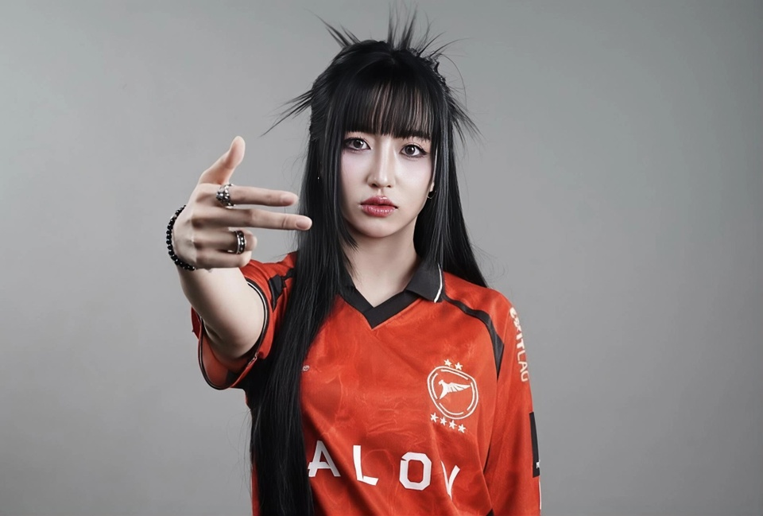
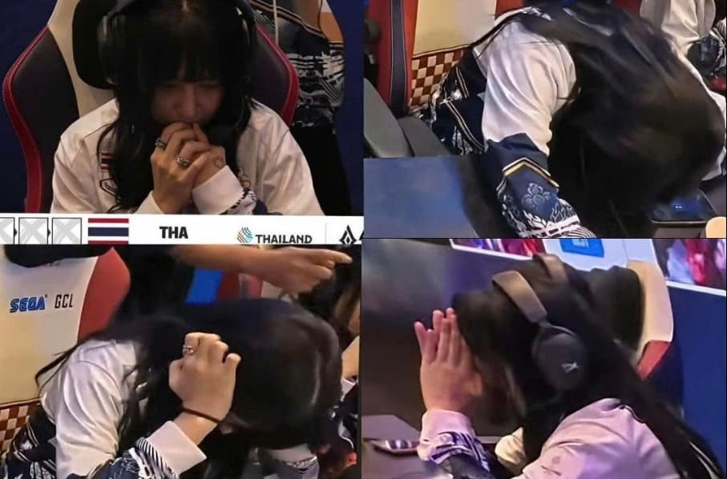
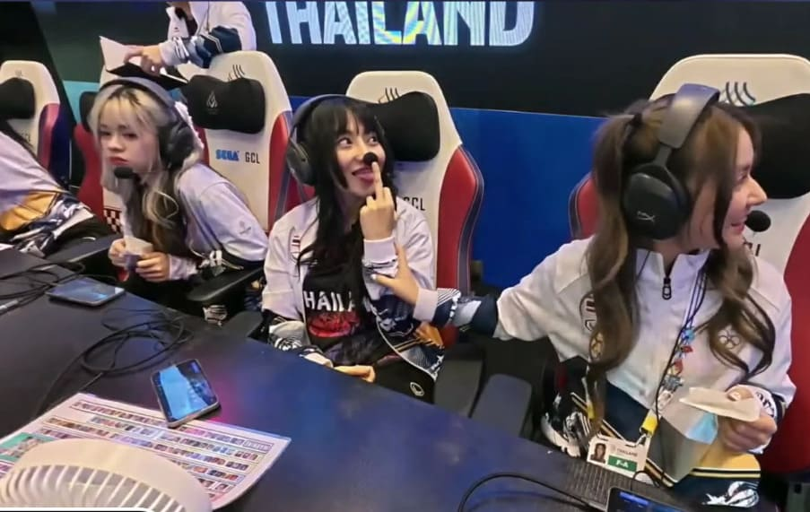
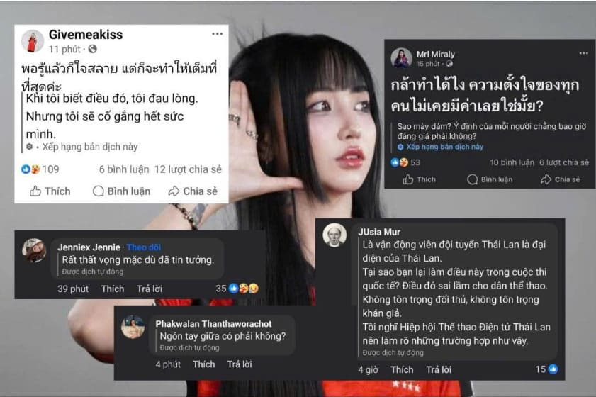

Nữ tuyển thủ Liên Quân Mobile Thái Lan gian lận tại SEAGAMES 33 là ai?
Những ngày vừa qua, cộng đồng Liên Quân Mobile quốc tế đang bàn tán xôn xao về nữ tuyển thủ Naphat Warasin - Người có hành vi gian lận nghiêm trọng tại SEA Games 33.
SEA Games 33, diễn ra tại Thái Lan vào tháng 12/2025, vốn được kỳ vọng là nơi tỏa sáng của nhiều vận động viên trong khu vực Đông Nam Á. Với vai trò là nước chủ nhà, Thái Lan đặt mục tiêu giành nhiều huy chương vàng và khẳng định vị thế thể thao sáng giá, trong đó có bộ môn Liên Quân Mobile – một trong những nội dung Esports được giới trẻ theo dõi và tranh tài sôi động.

Tuy nhiên, giữa không khí cạnh tranh khốc liệt và đầy cảm hứng đó, một sự kiện gây chấn động cộng đồng thể thao điện tử Đông Nam Á đã diễn ra khi một tuyển thủ nữ Liên Quân Mobile của đội tuyển Thái Lan bị phát hiện gian lận, dẫn đến việc cá nhân bị xử lý và đội tuyển rút lui khỏi SEA Games 33. Sự việc không chỉ ảnh hưởng đến thành tích của đội Thái Lan mà còn gióng lên hồi chuông cảnh báo về tinh thần fair play trong thể thao điện tử.
Cụ thể, Naphat Warasin là vận động viên nữ thuộc đội tuyển Liên Quân Mobile của Thái Lan tham dự SEA Games 33, diễn ra tại Bangkok và Chonburi, Thái Lan. Cô thi đấu ở vị trí xạ thủ trong đội hình đội tuyển nữ quốc gia và được biết đến trong cộng đồng người chơi Liên Quân Thái Lan với biệt danh Tokyogurlz. Naphat không phải là cái tên mới trong làng Esports nước này; cô có một lượng người theo dõi nhất định và từng góp mặt trong nhiều giải đấu khu vực trước đó.

Trước khi bị phát hiện hành vi gian lận, Naphat Warasin đã xây dựng một hình ảnh là một AD Carry đúng nghĩa, giữ vị trí tốt, xả damage ổn định, khả năng gánh vô cùng tối ưu. Chưa kể, tuyển thủ này còn được biết đến với danh hiệu “Thách Đấu” tại rank Thái - một meta cực kỳ khắc nghiệt và đề cao kỹ năng cá nhân. Trong các livestream của mình, Naphat Warasin cũng cực kỳ tỏa sáng với khả năng đánh và hiểu game đúng chuẩn trình Thách Đấu. Tuy nhiên, ngay sau khi phát hiện hành vi gian lận, cô đã thể hiện một “bộ mặt khác” với lối chơi vô cùng ba chấm, khiến nhiều người hâm mộ cảm thấy khó hiểu và đặt ra nghi vấn liệu rằng Naphat Warasin đã nhờ người đánh hộ này từ lâu?
Sự việc này hiện đang trở thành một trong những tiêu điểm lớn nhất của SEA Games 33 tính đến thời điểm hiện tại bởi tính chất nghiêm trọng và không thể chấp nhận được trong thể thao điện tử.
Trong trận đấu giữa đội tuyển nữ Liên Quân Mobile Thái Lan và đội tuyển Việt Nam diễn ra ngày 15/12/2025, Naphat Warasin đã bị phát hiện sử dụng phần mềm của bên thứ ba. Điều khiến dư luận phẫn nộ hơn cả là cách nữ tuyển thủ người Thái thực hiện hành vi gian lận ngay trước sự giám sát của tổ trọng tài. Với nickname Tokyogurlz, cô đã sử dụng phần mềm bên thứ ba, nhờ một người khác đăng nhập tài khoản và trực tiếp thi đấu thay mình, sau đó truyền hình ảnh trận đấu qua Discord.
Trên thiết bị cá nhân, Tokyogurlz chỉ việc chiếu lại màn hình đó và giả vờ thao tác như đang thi đấu thực sự. Cách làm này chẳng khác nào mở sẵn một đoạn video trên YouTube rồi diễn lại các thao tác cho có, nhằm đánh lừa ban giám sát và những người theo dõi trận đấu.
Sau khi hành vi gian lận bị xác nhận, Naphat Warasin đã phải đối mặt với loạt biện pháp kỷ luật nghiêm khắc từ phía Hiệp hội Thể thao Điện tử Thái Lan. Theo thông báo chính thức, nữ tuyển thủ này bị đình chỉ tham gia toàn bộ các hoạt động do Hiệp hội quản lý, bao gồm thi đấu, tập huấn và các chương trình liên quan đến đội tuyển quốc gia. Thời hạn đình chỉ chưa được ấn định cụ thể, mà sẽ căn cứ vào kết luận cuối cùng của quá trình điều tra đang được tiến hành.

Song song với án đình chỉ, Hiệp hội cũng quyết định thu hồi toàn bộ khoản trợ cấp tập huấn đã cấp cho Naphat trong suốt 10 tháng, kéo dài từ tháng 2 đến hết tháng 11. Đối với những cá nhân khác có liên quan đến vụ việc, Hiệp hội cho biết sẽ tiếp tục làm rõ vai trò, mức độ trách nhiệm trước khi đưa ra phương án xử lý và công bố trong thời gian tới.
Chưa dừng lại ở đó, Naphat Warasin còn vấp phải làn sóng chỉ trích gay gắt từ dư luận khi bị ghi lại khoảnh khắc giơ “ngón tay giữa” trước ống kính truyền hình trực tiếp. Hành vi này bị đánh giá là phản cảm, thiếu chuẩn mực ứng xử và đi ngược lại tinh thần thể thao chuyên nghiệp. Trong bối cảnh Esports ngày càng được công nhận như một môn thể thao chính thống, sự việc này càng khiến hình ảnh cá nhân của Naphat cũng như uy tín của Esports Thái Lan chịu tổn hại nghiêm trọng.

Sau trận thua trước Việt Nam và sự cố liên quan đến gian lận bị phanh phui, nhiều tuyển thủ nữ trong đội tuyển Thái Lan đã đồng loạt đăng tải các dòng trạng thái bày tỏ sự thất vọng, chán nản và tiếc nuối trên mạng xã hội. Dù không nhắc đích danh, những chia sẻ này được xem như là phản ánh tâm lý nặng nề trong nội bộ đội tuyển, cho thấy vấn đề không chỉ nằm ở cử chỉ thiếu lịch sự của một cá nhân, mà còn liên quan đến những rạn nứt, áp lực và khủng hoảng niềm tin đang âm ỉ bên trong tập thể đội tuyển nữ Thái Lan tại SEA Games 33.
